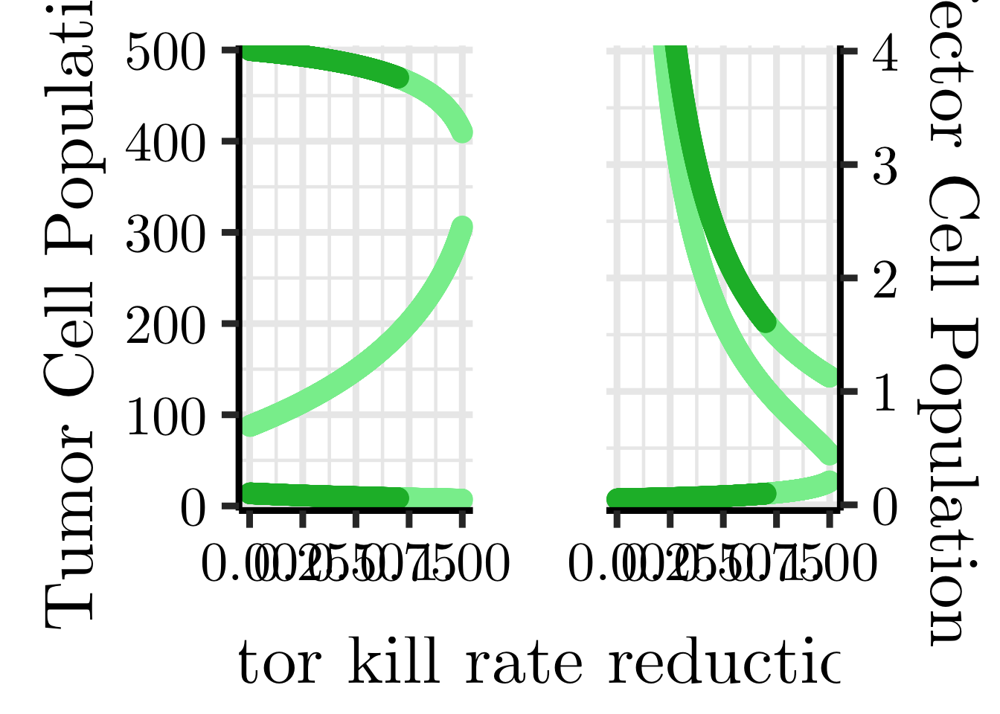

Chapter 3 The Kuznetsov Tumour–Immune Model
3.1 The Simple Kuznetsov Model
A tumour is an abnormal mass of tissue that forms when cells grow and divide more than they should or do not die when they should. Tumours may be benign (not cancer) or malignant (cancer). Malignant tumours can spread into, or invade, nearby tissues. They can also spread to other parts of the body through the blood and lymph systems.
Tumour cells reproduce and therefore could increase the tumour population. Moreover, tumour cells can also be removed through interactions with immune effector cells. These cells recognize and respond to abnormal cells, including tumour cells. Some examples of these cells are cytotoxic T lymphocytes and natural killer cells.
Define the following:
\(E\): Number of effector cells located at the tumor site,
\(T\): Number of tumor cells located at the tumor site,
\(s\): Baseline rate at which mature effector cells enter the tumour region,
\(p\): Rate of tumour stimulated effector cell accumulation
\(g\): Saturation parameter for tumour stimulated effector cell accumulation,
\(m\): Rate of effector cell inactivation due to interactions with tumour cells,
\(n\): Rate of tumour cell killing through interactions with effector cells,
\(d\): Rate of ordinary effector cell elimination
\(a\): Maximum growth rate of the tumor cell population,
\(b\): Inverse of maximum carrying capacity,
where all of the above parameters are constant.
To determine the rate of change of the effector cell population, we consider processes that increase and decrease the number of effector cells. Effector cells enter the tumour region at baseline rate \(s\). Tumour cells also stimulate the accumulation of effector cells. We assume that this stimulation increases with tumour cell number but eventually saturates, giving the term \(\frac{pET}{g+T}\). The saturation reflects the assumption that the accumulation of effector cells cannot increase indefinitely as tumour size increases, due to biological limitations. Effector cells are also inactivated through interactions with tumour cells at a rate proportional to both \(E\) and \(T\), giving the term \(mET\). Finally, effector cells are eliminated naturally at a rate proportional to the size of the population, giving the term \(dE\).
Combining these processes together, we obtain:
\[\begin{equation} \frac{dE}{dt} = s + \frac{pET}{g+T} - mET -dE \tag{3.1} \end{equation}\]
Similarly, to determine the rate of change of the tumour cell population, we consider processes that increase and decrease the number of tumour cells. We assume that tumour cells undergo logistic growth. At low tumour cell numbers, growth is approximately exponential, while at high tumour cell numbers, growth slows due to limitations such as available resources. This gives the logistic growth term \(aT(1-bT)\). Tumour cells are also removed through interactions with immune effector cells. We assume that the rate of tumour cell killing is proportional to both the number of tumour cells and the number of effector cells, giving the term \(nET\). Combining tumour growth and immune mediated killing, we obtain:
\[\begin{equation} \frac{dT}{dt} = aT(1-bT) -nET \tag{3.2} \end{equation}\]
Equations (3.1) and (3.2) form the reduced Kuznetsov tumour immune model. These equations form a system of ODEs describing the interactions between tumour cells and immune effector cells.
3.2 Analysing the Kuznetsov Model
Recall that an equilibrium is a state where both \(\frac{dE}{dt}=0\) and \(\frac{dT}{dt}=0\).
We first consider the case where there are no tumour cells, so \(T=0\). Equation (3.1) becomes
\[ \frac{dE}{dt}=s-dE. \]
Setting this equal to zero and solving for \(E\), we get
\[ E=\frac{s}{d}. \]
Thus, the tumour free equilibrium is
\[ (E_1,T_1)=(\frac{s}{d},0). \]
This equilibrium represents a state in which there are no tumour cells, while effector cells remain present due to the continuous baseline influx \(s\).
We next consider equilibria where both \(T\neq0\) and \(E\neq0\). From equation (3.2), setting \(\frac{dT}{dt}=0\) gives
\[ aT(1-bT)-nET=0. \]
Factoring out \(T\) gives
\[ T(a-abT-nE)=0. \]
Since \(T\neq0\), we obtain
\[ E=\frac{a}{n}(1-bT). \]
This is the tumour nullcline for positive tumour cell populations.
Similarly, setting equation (3.1) equal to zero gives
\[ s+\frac{pET}{g+T}-mET-dE=0. \]
Solving for \(E\), we get
\[ E= \frac{s(g+T)} {d(g+T)+mT(g+T)-pT}. \]
This is the effector cell nullcline.
Therefore, positive equilibrium points occur at the intersections of the two nullclines.
Depending on the parameter values, the model can have zero, one, two, or three positive equilibrium points.
To analyse the stability around these equilibria, we first find the Jacobian matrix. Define \(f(E,T)= s+\frac{pET}{g+T}-mET-dE\) and \(g(E,T)= aT(1-bT)-nET\).
The Jacobian matrix is
\[\begin{pmatrix} \frac{pT}{g+T}-mT-d & \frac{pgE}{(g+T)^2}-mE \\ -nT & a-2abT-nE \end{pmatrix}\]
We first analyse the stability around the tumour free equilibrium.
\[J(E_1,T_1)= \begin{pmatrix} -d & \frac{ps}{dg}-m\frac{s}{d} \\ 0 & a-\frac{ns}{d} \end{pmatrix}\]
The eigenvalues of \(J(E_1,T_1)\) are \(\lambda_1=-d\) and \(\lambda_2=a-\frac{ns}{d}.\)
Since \(d>0\), we always have \(\lambda_1<0\). The stability of the tumour free equilibrium therefore depends on the second eigenvalue.
If \(a-\frac{ns}{d}<0\), then both eigenvalues are negative and the tumour free equilibrium is locally asymptotically stable.
If \(a-\frac{ns}{d}>0\), the eigenvalues have opposite signs. Therefore, the tumour free equilibrium is a saddle point and is unstable.
Notice that \(a\) represents the maximum tumour growth rate, while \(\frac{ns}{d}\) represents the strength of tumour cell removal associated with the baseline effector population. Thus, the local stability of the tumour free state depends on the balance between tumour growth and immune mediated tumour removal.
Kuznetsov et al. used experimental data from mice to obtain the following parameter values for the model. The parameters \(a\), \(b\), and \(s\) were specified based on experimental considerations, while the remaining parameters were estimated by nonlinear least-squares fitting.:
\[ s=1.3\times10^4,\quad p=0.1245,\quad g=2.019\times10^7,\quad m=3.422\times10^{-10}, \]
\[ n=1.101\times10^{-7},\quad d=0.0412,\quad a=0.18,\quad b=2.0\times10^{-9}. \] using these, we get that the tumour free equilibrium is \((E_1,T_1)=(\frac{s}{d},0)\approx(315534,0)\).
Also, \(\lambda_1= -d = -0.0412\) and \(\lambda_2= a-\frac{ns}{d} \approx 0.1453\). Since the eigenvalues have opposite signs, \((E_1,T_1)\) is a saddle point and is unstable.
Now consider the case where \(E \neq 0\) and \(T \neq 0\). We will use the estimated parameter values to study stability in this case, since the equilibria depend on parameter values.
Note that equilibria occur at the intersection of the tumour and effector cell nullclines. That is, they occur when \[ \frac{a}{n}(1-bT) = \frac{s(g+T)} {d(g+T)+mT(g+T)-pT}. \]
Using the estimated values, we get the following equilibria:
\[ (E_2,T_2) = (1.608\times10^6,\;8.186\times10^6), \]
\[ (E_3,T_3) = (7.585\times10^5,\;2.680\times10^8), \]
and
\[ (E_4,T_4) = (1.732\times10^5,\;4.470\times10^8). \] Now, we analyse the stability around each equilibrium.
\[ J(E_2,T_2) \approx \begin{pmatrix} -0.00808 & 0.00447 \\ -0.90132 & -0.00295 \end{pmatrix} \] has eigenvalues \(\lambda_1 \approx -0.00552+0.06342i\) and \(\lambda_2 \approx -0.00552-0.06342i.\) Both eigenvalues are complex with negative real parts, thus the equilibrium \((E_2,T_2)\) is a stable focus.
\[ J(E_3,T_3) \approx \begin{pmatrix} -0.01714 & -0.000237 \\ -29.5093 & -0.09649 \end{pmatrix} \] has eigenvalues \(\lambda_1\approx0.03576\) and \(\lambda_2\approx-0.14936.\) Since the eigenvalues have opposite signs, \((E_3,T_3)\) is a saddle point and is unstable.
\[ J(E_4,T_4) \approx \begin{pmatrix} -0.07505 & -0.0000573 \\ -49.2175 & -0.16093 \end{pmatrix} \]
has eigenvalues \(\lambda_1\approx-0.04970\) and \(\lambda_2\approx-0.18628.\)
Since they are both negative, the \((E_4,T_4)\) is asymptotically stable.
3.3 Coexistence equilibria: root structure and sign test
A tumor-present equilibrium satisfies both nullclines of (3.1) and (3.2) simultaneously: \[\begin{equation} x = f(y) \equiv \frac{s}{d+m y - \dfrac{p y}{g+y}}, \qquad x = g(y) \equiv a(1-b y). \end{equation}\] Setting \(f(y)=g(y)\) and clearing the denominator \((g+y)\) yields a cubic polynomial in \(y\) (Kuznetsov et al.’s Equation 8): \[\begin{equation} C_3 y^3 + C_2 y^2 + C_1 y + C_0 = 0, (\#eq:kuz_cubic) \end{equation}\] with Each positive real root \(y^*\) of @ref(eq:kuz_cubic) corresponds to a biologically admissible tumor-present equilibrium. Rather than solving the cubic directly, we can bound – and in this case pin down – the number of positive roots purely from the of its coefficients, using Descartes’ Rule of Signs: the number of positive real roots of a real polynomial is either equal to the number of sign changes in its ordered coefficient sequence, or less than that by an even number.
Step 1: Sign of \(C_3\). Since \(m,b>0\), we always have \(C_3 = mb>0\).
Step 2: Sign of \(C_0\). Directly from its definition, \(C_0>0 \iff s/a > d \iff s/d > a\) – exactly the tumor-free stability condition of Proposition \(\ref{prop_kuz_tumorfree}\). So \(C_0<0\) precisely when the tumor-free state is unstable, which is the regime of interest, since it is the regime in which a tumor-present equilibrium must exist (by the Intermediate Value Theorem: the cubic \(F(y) = C_3y^3+C_2y^2+C_1y+C_0\) satisfies \(F(0)=C_0<0\) and \(F(y)\to+\infty\) as \(y\to\infty\), so it has at least one positive root).
Step 3: Sign of \(C_2\). Suppose effector activation dominates exhaustion in the sense that \(p > mg+d\) – this holds for the fitted parameters in Table \(\ref{tbl:kuz_param}\) and is a standing assumption in . Then \(mg+d-p<0\), so \(C_2 = -m + (mg+d-p)b\) is the sum of two negative terms: \(C_2<0\) for every \(b>0\).
Step 4: Sign of \(C_1\). Under the same condition \(p>mg+d\), and since \(s/a>0\) and \(dgb>0\), \[ C_1 = \frac{s}{a} + \underbrace{(p-mg-d)}_{>0} + dgb > 0. \]
Putting it together. With \(C_0<0\), \(C_1>0\), \(C_2<0\), \(C_3>0\), the ordered coefficient sequence is \((+,-,+,-)\) (reading from \(C_3\) down to \(C_0\)), which has three sign changes. By Descartes’ Rule, the cubic @ref(eq:kuz_cubic) therefore has either three or one positive real roots. Since we have already shown (Step 2) that at least one positive root always exists in this regime, and since three is the generic, structurally stable count predicted by the sign pattern, the system typically admits coexistence equilibria – producing, together with the unstable tumor-free state, a total of four steady states and the characteristic bistable “dormant tumor” / “tumor escape” structure that is the central result of . Descartes’ Rule alone cannot distinguish the three-root case from the (non-generic) one-root case within this sign pattern; a finer tool, a Sturm sequence built from \(C_0,C_1,C_2\) and the auxiliary quantities \(S=C_2C_1-9C_3C_0\), \(T=2C_2S/R-3C_3S^2/R^2-C_1\), and \(R=2C_2^2-6C_3C_1\), is needed to certify the exact count in borderline cases; see for the full Sturm-sequence table.
Checking the fitted parameters. Using the values in Table \(\ref{tbl:kuz_param}\): \(mg+d = (0.00311)(20.19)+0.3743 \approx 0.437\), which is indeed less than \(p=1.131\), confirming Steps 3–4. And \(s/d = 0.1181/0.3743 \approx 0.316\), which is less than \(a=1.636\), confirming the tumor-free state is unstable (Step 2). The sign sequence is therefore \((+,-,+,-)\) as derived above, correctly predicting the three coexistence equilibria – the “dormant tumor” state, a saddle, and the “tumor escape” state – that finds numerically and uses to build their bifurcation diagram and phase portrait.
3.4 Extending the Model: An Immune-Resistant Tumor Subpopulation
The Kuznetsov model of Section \(\ref{sec:kuznetsov}\) treats the tumor as a single, immunologically uniform population. Real tumors, however, are heterogeneous, and subclones that partially evade immune-mediated killing are a central driver of treatment failure. As a first extension, we equip the tumor cell population \(T\) with a degree of immune resistance, benchmarked directly against the Kuznetsov model so that setting the resistance parameters to their “no resistance” values recovers Section \(\ref{sec:kuznetsov}\) exactly. The model presented here is the single-subpopulation special case of a more general two-subpopulation (immune-resistant vs. immune-sensitive, with optional chemotherapy resistance) model developed in , to which we refer the reader for the full treatment, including both immune-evasion mechanisms considered simultaneously with chemotherapy.
We assume resistance carries a growth-rate cost \(\zeta>0\), so the resistant population’s growth rate is \(a_T=a-\zeta\) rather than the wild-type rate \(a\), and confers a benefit \(\theta\in[0,1]\) that reduces the effectiveness of effector-mediated killing (\(\theta=1\) recovers full susceptibility, i.e. no resistance). Writing \(E\) for the effector population and \(\kappa=1/b\) for the carrying capacity, the dynamics are This is structurally identical to (3.1) and (3.2): tumor growth is logistic and suppressed by effector-mediated killing at rate \(\theta E\); effectors are produced at baseline rate \(s\), activated through a saturating term with parameters \(p_T,g\), exhausted or inactivated by the tumor at rate \(m_T\), and die naturally at rate \(d\). The only change is that the activation and inactivation parameters, \(p_T\) and \(m_T\), and the effective growth rate \(a_T\) and kill-rate reduction \(\theta\), now depend on the resistance mechanism the tumor employs, as derived mechanistically below. Setting \(\theta=1\), \(a_T=a\), \(p_T=p\), \(m_T=m\) recovers (3.1) and (3.2) exactly, confirming this is a proper extension rather than a different model.
3.4.1 Mechanistic derivation of \(\theta\), \(p_T\), and \(m_T\)
As in the Kuznetsov model, effectors and tumor cells transiently bind to form a conjugate \(C\), which then dissociates leaving either cell undamaged, the tumor cell lethally hit, or the effector cell inactivated (Figure \(\ref{fig:red_ET_diagram}\)). Immune resistance is modeled as a change in the rates governing this reaction scheme relative to a wild-type (non-resistant) baseline, denoted with a superscript \((0)\).
Assuming the conjugate dynamics equilibrate on a fast time scale relative to cell division and death (the same quasi-steady-state argument used in to derive (3.1) and (3.2) from the underlying reaction scheme), we have \(C = \Gamma E T\) with \(\Gamma = \gamma_1/(\gamma_{-1}+\gamma_2+\gamma_3)\). After rescaling by the wild-type reference rate \(\gamma_2^{(0)}\Gamma^{(0)}\), the reduced system @ref(eq:red_ODEs_T) and @ref(eq:red_ODEs_E) follows with \[\begin{equation} \theta = \frac{\gamma_2\Gamma}{\gamma_2^{(0)}\Gamma^{(0)}}, \qquad p_T=p\,\frac{\Gamma}{\Gamma^{(0)}}, \qquad m_T = \frac{\gamma_3\Gamma}{\gamma_2^{(0)}\Gamma^{(0)}}. \end{equation}\]
We consider two concrete resistance mechanisms:
The distinction between the two mechanisms is therefore whether resistance acts on the of an effector–tumor encounter (checkpoint evasion) or on the of encounter itself (reduced antigen presentation). Table \(\ref{tbl:red_param}\) summarizes the parameters of the extended model, reusing the Kuznetsov baseline values from Table \(\ref{tbl:kuz_param}\) for all quantities unrelated to resistance.
3.4.2 Equilibria and stability of the extended model
The system @ref(eq:red_ODEs_T) and @ref(eq:red_ODEs_E) admits a tumor-free equilibrium \(\mathcal{E}_0 = (0, s/d)\) – identical in form to the Kuznetsov tumor-free state, since resistance only affects the dynamics once \(T>0\) – and, when it exists, a tumor-present equilibrium \(\mathcal{E}_1=(T^*,E^*)\) with \(T^*>0\). Exactly as in Section \(\ref{sec:kuznetsov}\), the Jacobian at \(\mathcal{E}_0\) is triangular, with eigenvalues \[\begin{equation} \lambda_1 = a_T - \theta\,\frac{s}{d}, \qquad \lambda_2 = -d, \end{equation}\] giving the following direct generalization of Proposition \(\ref{prop_kuz_tumorfree}\).
At a tumor-present equilibrium, \(T^*\) and \(E^*\) satisfy \[\begin{equation} E^* = a_T\left(1-\frac{T^*}{\kappa}\right) = \frac{s}{\dfrac{p_T T^*}{T^*+g} - m_T T^* - d}. (\#eq:red_eq_condition) \end{equation}\]
3.4.3 Root structure and sign test
Clearing denominators in Equation @ref(eq:red_eq_condition), exactly as was done for the Kuznetsov model in Section \(\ref{sec:kuznetsov}\), gives the cubic polynomial \[\begin{equation} F(T^*) = B_3 T^{*3} + B_2 T^{*2} + B_1 T^* + B_0 = 0, (\#eq:red_cubic) \end{equation}\] with coefficients One can check directly that \(B_i = a_T\kappa\,C_i'\) for \(i=0,\dots,3\), where \(C_i'\) denotes the Kuznetsov coefficient \(C_i\) of Section \(\ref{sec:kuznetsov}\) with \((a,p,m,b)\) replaced by \((a_T,p_T,m_T,1/\kappa)\). Since multiplying a polynomial by the positive constant \(a_T\kappa\) does not change its roots, @ref(eq:red_cubic) has exactly the same positive-root structure as the Kuznetsov cubic with resistant parameters substituted in – confirming that resistance enters the equilibrium problem only by remapping the same three parameters that already governed the wild-type dynamics. The same four-step sign test from Section \(\ref{sec:kuznetsov}\) therefore applies verbatim:
As before, the sign sequence \((+,-,+,-)\) has three sign changes, so Descartes’ Rule predicts either one or three positive roots of @ref(eq:red_cubic), with three being the generic case – the hallmark of bistability between a low- and a high-tumor-burden resistant equilibrium. This is exactly the qualitative structure established for the Kuznetsov model in Section \(\ref{sec:kuznetsov}\), now shown to persist under both forms of immune resistance considered here, provided effector activation continues to dominate tumor-induced exhaustion (\(p_T>m_Tg+d\)) at the resistant phenotype’s parameter values.
The Jacobian at \(\mathcal{E}_1\) is \[\begin{equation} J(\mathcal{E}_1) = \begin{pmatrix} -\dfrac{a_T}{\kappa}T^* & -\theta T^* \\[8pt] E^*\left(\dfrac{p_Tg}{(T^*+g)^2} - m_T\right) & -\dfrac{s}{E^*} \end{pmatrix}, \end{equation}\] with \(\tr(J(\mathcal{E}_1))<0\) and \[\begin{equation} \det(J(\mathcal{E}_1)) = \frac{a_Ts}{\kappa E^*}T^* + \left(\frac{p_Tg}{(T^*+g)^2}-m_T\right)\theta E^* T^*. \end{equation}\] As in the wild-type model, \(\mathcal{E}_1\) is stable whenever \(\det(J(\mathcal{E}_1))>0\), which holds in particular if \(p_Tg/(T^*+g)^2 > m_T\); otherwise, bistability between a low- and high-tumor-burden resistant equilibrium arises via the usual saddle-node bifurcation structure, consistent with the three-root sign-test result above.
3.5 Bifurcation Analysis
So far, we have studied the equilibria and stability of the Kuznetsov tumour-immune model for fixed parameter values. However, the qualitative behaviour of the system may change when one or more model parameters are varied. Parameters such as tumour growth rates, immune response strength, and immune evasion may differ between individuals or change over time. Hence, it is important to consider how the model may change when we vary the parameters.
A bifurcation occurs when a small change in a parameter causes a qualitative change in the behaviour of a dynamical system. These changes may include the appearance or disappearance of equilibrium points, or a change in the stability of an equilibrium.
For the Kuznetsov model, parameters such as the maximum tumour growth rate \(a\), the tumour killing rate \(n\), and the rate of tumour-stimulated effector accumulation \(p\) may be treated as bifurcation parameters. Varying these parameters allows us to study how changes in tumour growth or immune activity affect the equilibria of the system. In particular, the parameter \(\theta\) represents the effectiveness of immune-mediated tumour killing relative to the original tumour population. A decrease in \(\theta\) therefore corresponds to increased immune resistance. By varying \(\theta\), we can examine whether increasing tumour resistance changes the number or stability of the equilibria.
Bifurcation diagrams provide information that cannot be obtained from a single phase plane plot. A phase plane describes the behaviour of the system for one fixed set of parameters, whereas a bifurcation diagram describes how the long-term behaviour of the system changes across a range of parameter values.
## Using font: CMU Serif -> /Users/nishanmudalige/Library/Fonts/cmunrm.ttf
Figure 3.1: Simulated tumour growth over 30 days.
3.6 Summary
Starting from the two-population Kuznetsov tumor–immune model, we showed that its coexistence-equilibrium structure is governed by a cubic polynomial whose coefficient signs – not its explicit roots – determine whether the system is monostable or bistable. The same sign-test machinery, applied unchanged after remapping three parameters to account for a resistant phenotype, shows that an immune-resistant tumor subpopulation inherits the same qualitative bistability whenever effector activation continues to dominate tumor-induced exhaustion at the resistant phenotype’s parameter values. This worked example illustrates a general strategy for analyzing tumor–immune models in this course: reduce the equilibrium condition to a low-degree polynomial, and use a sign test on its coefficients, rather than brute-force root-finding, to characterize the number and type of biologically admissible steady states.
% %